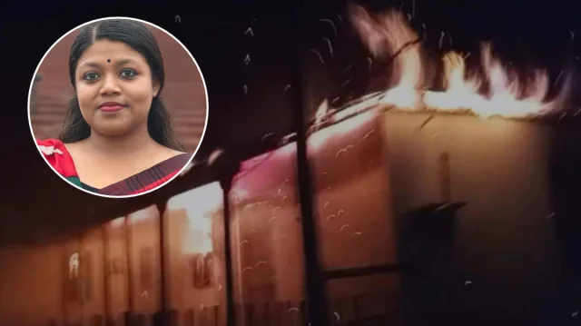

BD Barguna News
রাজনীতি
এনসিপি নেত্রী নুসরাতের বাড়িতে পেট্রোল বোমা হামলা
📅 প্রকাশিত: ১২ নভেম্বর, ২০২৬ এ ৭:২৪ AM

হোম
আজকের সর্বশেষ খবর
বিশেষ সংবাদ
করোনাভাইরাস
সম্পাদকীয়
জাতীয়
রাজধানী
সারাদেশ
রাজনীতি
বিশ্ব সংবাদ
খেলা
বিনোদন
অর্থনীতি
টেক
শিক্ষা
স্বাস্থ্য
চাকরি
সোশ্যাল মিডিয়া
আইন-আদালত
প্রজন্ম
প্রবাস
ক্যাম্পাস
সাহিত্য
ধর্ম
ছবি
ভিডিও
ই-পেপার
English
সর্বশেষ
বিশেষ সংবাদ
জাতীয়
সারাদেশ
রাজনীতি
বিশ্ব সংবাদ
খেলা
বিনোদন
অর্থনীতি
লাইফস্টাইল
টেক
আইন-আদালত
ভিডিও
মতামত
অন্যান্য
Eng
menu
রাজনীতি
রাজনীতি
এনসিপি নেত্রী নুসরাতের বাড়িতে পেট্রোল বোমা হামলা
BD Barguna News
প্রকাশ : ১২ নভেম্বর ২০২৬, ০২:২৪
এনসিপি নেত্রী নুসরাতের বাড়িতে পেট্রোল বোমা হামলা
জাতীয় নাগরিক পার্টির (এনসিপি) যুগ্ম আহ্বায়ক নুসরাত তাবাসসুম জ্যোতির বাড়িতে পেট্রোল বোমা নিক্ষেপ করেছে দুর্বৃত্তরা।
gnewsদৈনিক ইত্তেফাকের সর্বশেষ খবর পেতে Google News অনুসরণ করুন
বুধবার (১১ নভেম্বর) রাতে সামাজিক যোগাযোগমাধ্যম ফেসবুকে দেওয়া এক পোস্টে তিনি নিজেই এ হামলার কথা নিশ্চিত করেন।
ফেসবুক পোস্টে ক্ষোভ প্রকাশ করে নুসরাত তাবাসসুম লেখেন, “বাড়িতে পেট্রোল বোমা মেরেছে। কারা মেরেছে জানি না।”
হামলাকারীদের প্রতি হুঁশিয়ারি দিয়ে তিনি আরও উল্লেখ করেন, “এভাবে যদি কণ্ঠরোধ করা যাবে ভেবে থাকিস, তাহলে ভুল। আগুনের পথ পাড়ি দিয়ে নিজের কাজ করে যাব। ইনকিলাব জিন্দাবাদ।”
তাৎক্ষণিকভাবে এ ঘটনায় কোনো হতাহত বা ক্ষয়ক্ষতির বিস্তারিত তথ্য জানা যায়নি।
© প্রকাশক কর্তৃক সর্বস্বত্ব সংরক্ষিত
অনুসন্ধানআর্কাইভছবিবাংলা কনভার্টারভিডিওপরিবেশপ্রবাসসাহিত্যচাকরি
বিজ্ঞাপন
যোগাযোগ
গোপনীয়তা নীতি
শর্তাবলী
Twitter
YouTube
Instagram